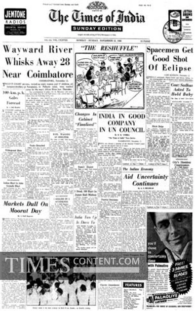

FOR EVERY HOME
Presented with love, sixty years later
The Times of India
SUNDAY EDITIONLet truth prevail
OWN HISTORYJETO
INKWords that last.
Wayward River
Whisks Away 28
Near Coimbatore
A sudden river tragedy near Coimbatore leads the Sunday front page.
The newspaper that arrived on doorsteps on this November morning carried the news of a world still unfolding. This day's leading report concerned the loss of lives near Coimbatore.
Alongside it were dispatches from the capital, news from overseas and the ordinary rhythms of a Sunday in India. These are the headlines printed on the day Appa was born.
Markets Dull On
Moorat Day
The financial columns marked the festive trading session. Even on a day of celebration, the markets had their place in the morning paper.
A newspaper. A cup of coffee.
A whole lifetime ahead.

The day's political cartoon · Original archive detail
INDIA IN GOOD
COMPANY
IN U.N. COUNCIL
India's place on the world stage was another of the day's prominent stories. The United Nations featured at the centre of this Sunday edition.
At home, the political cartoon above turned its attention to a reshuffle. The juxtaposition of politics and international affairs captures something of the era.
Changes In
Cabinet
“Imminent”
A changing Cabinet was among the stories readers followed that Sunday.
Sixty years.
One extraordinary story.
So much has changed since this paper was printed. But for our family, the most important story of November 13, 1966 was only just beginning.
Spacemen Get
Good Shot
Of Eclipse
Above the Earth, another perspective on a remarkable world.
Space exploration made the front page, too. The original edition reports on spacemen observing an eclipse — a glimpse of the ambitions of the 1960s.
Open the original page to explore the complete issue's front cover, just as it appeared sixty years ago.
For Indian Economy
Aid Uncertainty
Continues
Questions about economic assistance also occupied the front page. Together, the headlines make a small window into the world of November 1966.
IS 60.
Our favourite headline.
Then, now & always.